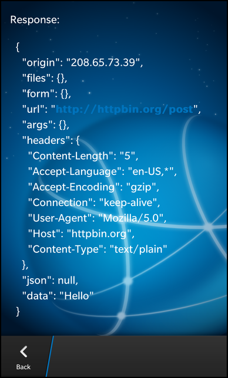
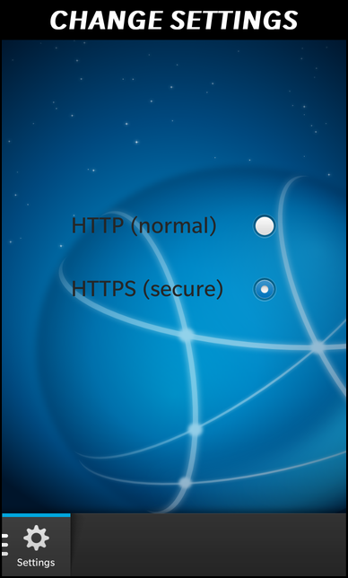

Files:
The HTTP Test example demonstrates how to retrieve or send data from/to a HTTP service.
 
In this example we'll learn several concepts; how to use QNetworkAccessManager to make a network request to post or get data from http service, how to setup a secure connection with QSsslConfiguration, how to parse a response in the form of a QNetworkReply.
The UI of this sample consists of 3 Tab's: Get, Post and Settings. The 'Get' Tab presents the ability to make a request to the host to return your external IP address, and allows you to parse and display the Get response headers. The 'Post' Tab consists of a text area with a "post" button, which allows the user to enter content which will be posted to the host. The 'Settings' Tab allows you to toggle between normal HTTP and HTTPS protocols.
All the business logic is encapsulated in the C++ class' ExternalIP, PostHttp, and RequestHeaders which have been registered with qml as their respective types.
GET
Button { horizontalAlignment: HorizontalAlignment.Center text: qsTr("External IP") onClicked: { httpGetNavPane.push(ipInfoPageDefinition.createObject()); } attachedObjects: ComponentDefinition { id: ipInfoPageDefinition source: "ipinfo.qml" } } Container { horizontalAlignment: HorizontalAlignment.Center verticalAlignment: VerticalAlignment.Center Label { id: ipaddress visible: false text: qsTr("Retrieving IP address") textStyle { base: SystemDefaults.TextStyles.BigText; color: Color.White fontWeight: FontWeight.Bold } } } NetworkActivity { id: progressIndicator horizontalAlignment: HorizontalAlignment.Fill verticalAlignment: VerticalAlignment.Fill title: qsTr("Retrieving IP address") } attachedObjects: [ QTimer { id: timer interval: 1000 onTimeout: { // One second after page loads make the http get request netip.getIP(); } }, ExternalIP { id : netip onComplete :{ // Stop progress indicator and hide it progressIndicator.active = false; progressIndicator.visible = false; // Display external IP address ipaddress.text = info; ipaddress.visible = true; timer.stop(); } } ] onCreationCompleted: { // Start progress indicator and timer progressIndicator.active = true; timer.start(); }
Whenever the user clicks the 'External IP' button, the ipinfo.qml page is created dynamically and pushed onto the TabbedPane stack to display the IP address. When the page is created, it instantiates the ExternalIP object, which is used to invoke the getIP() method to make the request. Once it receives the "onComplete" signal, it updates the Label to display the response data.
Button { horizontalAlignment: HorizontalAlignment.Center text: qsTr("Get Request Headers") onClicked: { httpGetNavPane.push(requestinfoPageDefinition.createObject()); } attachedObjects: ComponentDefinition { id: requestinfoPageDefinition source: "requestinfo.qml" } } Container { horizontalAlignment: HorizontalAlignment.Center verticalAlignment: VerticalAlignment.Center leftPadding: 50 TextArea { id: headers visible: false editable: false backgroundVisible: false text: qsTr("Retrieving Headers") textStyle { base: SystemDefaults.TextStyles.BodyText; color: Color.White } } } NetworkActivity { id: progressIndicator horizontalAlignment: HorizontalAlignment.Fill verticalAlignment: VerticalAlignment.Fill title: qsTr("Retrieving Headers") } attachedObjects: [ QTimer { id: timer interval: 1000 onTimeout: { netheaders.getRequest(); } }, RequestHeaders { id : netheaders onComplete :{ progressIndicator.active = false; progressIndicator.visible = false; headers.text = info; headers.visible = true; timer.stop(); } } ] onCreationCompleted: { progressIndicator.active = true; timer.start(); }
When the user clicks the 'Get Request Headers' button, the requestinfo.qml page is created dynamically and pushed onto the TabbedPane stack to display the header properties. When the page is created, it instantiates the RequestHeaders object, which is used to invoke the getRequest() method to retrieve HTTP request headers. Once it receives the "onComplete" signal, it updates the TextArea with the header properties for display.
POST
Container { verticalAlignment: VerticalAlignment.Center leftPadding: 30 rightPadding: 30 TextArea { id: postBody preferredHeight: 350 hintText: qsTr("Enter post body") } Button { horizontalAlignment: HorizontalAlignment.Center text: qsTr("Post!") onClicked: { _httpsample.postBody = postBody.text httpPostNavPane.push(postPageDefinition.createObject()); } attachedObjects: ComponentDefinition { id: postPageDefinition source: "post.qml" } } } Container { horizontalAlignment: HorizontalAlignment.Center verticalAlignment: VerticalAlignment.Center leftPadding: 30 Label { id: postResponseLabel visible: false text: qsTr("Response:") textStyle { base: SystemDefaults.TextStyles.BodyText; color: Color.White } } TextArea { id: postResponseBody visible: false editable: false backgroundVisible: false textStyle { base: SystemDefaults.TextStyles.BodyText; color: Color.White } } } NetworkActivity { id: progressIndicator horizontalAlignment: HorizontalAlignment.Fill verticalAlignment: VerticalAlignment.Fill title: qsTr("Posting...") } attachedObjects: [ QTimer { id: timer interval: 1000 onTimeout: { // One second after page loads make the http post request netpost.post(_httpsample.postBody); } }, PostHttp { id : netpost onComplete :{ progressIndicator.active = false; progressIndicator.visible = false; postResponseBody.text = info; postResponseBody.visible = true; postResponseLabel.visible = true; timer.stop(); } } ] onCreationCompleted: { progressIndicator.active = true; timer.start(); }
This tab provides a TextArea to allow the user to enter data for posting to the host with a click of the 'Post!' button. Upon clicking the button, the post.qml page is created dynamically and displayed. During the creation of the page a PostHttp object is instantiated which is used to invoke the post() method that takes the TextArea content as its argument. Upon the completion of the request, the TextArea of the post page is updated to display the request response.
SETTINGS
RadioGroup { Option { text: qsTr("HTTP (normal)") selected: !_httpsample.useHttps } Option { text: qsTr("HTTPS (secure)") selected: _httpsample.useHttps } onSelectedIndexChanged: { _httpsample.useHttps = (selectedIndex == 1) } }
This tab provides configuration options, using a RadioGroup, to switch between normal HTTP and secure HTTPS protocols when communicating with the host.
This class is central to the application which creates the UI, registers the custom types and handles the http settings functionality.
HttpSampleApp::HttpSampleApp() { // We set up the application Organization and name, this is used by QSettings // when saving values to the persistent store. QCoreApplication::setOrganizationName("Example"); QCoreApplication::setApplicationName("HttpSample"); //add Post class as qml type qmlRegisterType<PostHttp>("Network.PostHttp", 1, 0, "PostHttp"); //add ExternalIP class as a qml type qmlRegisterType<ExternalIP>("Network.ExternalIP", 1, 0, "ExternalIP"); //add custom object RequestHeaders class as a qml type qmlRegisterType<RequestHeaders>("Network.RequestHeaders", 1, 0, "RequestHeaders"); //add a QTimer class as a qml type qmlRegisterType<QTimer>("my.library", 1, 0, "QTimer"); QmlDocument* qml = QmlDocument::create("asset:///main.qml").parent(this); qml->setContextProperty("_httpsample", this); AbstractPane* root = qml->createRootObject<AbstractPane>(); Application::instance()->setScene(root); }
Inside the constructor the custom PostHttp, ExternalIP and RequestHeaders types are registered with qml to expose them. Also, it's instance is set in the qml context to allow you to access its properties, slots and invocable methods via qml.
void HttpSampleApp::setUseHttps(bool value) { if (AppSettings::isUsingHttps() == value) return; AppSettings::setHttps(value); emit useHttpsChanged(); } bool HttpSampleApp::useHttps() const { return AppSettings::isUsingHttps(); }
These methods are used to toggle between the HTTP/HTTPS protocols upon modifying its "useHttps" bound property via the RadioGroup qml control.
ExternalIP class is solely responsible for retrieving the external IP using 'Get' Http communication, and parsing it's response.
ExternalIP::ExternalIP(QObject* parent) : QObject(parent) , m_networkAccessManager(new QNetworkAccessManager(this)) { }
The constructor initializes it's member variables, such as the QNetworkAccessManager.
void ExternalIP::getIP() { const QUrl url("http://httpbin.org/ip"); QNetworkRequest request(url); // Check App settings to see if we should use SSL if (AppSettings::isUsingHttps()) { request.setUrl(QUrl("https://httpbin.org/ip")); QSslConfiguration config = request.sslConfiguration(); config.setPeerVerifyMode(QSslSocket::VerifyNone); config.setProtocol(QSsl::TlsV1); request.setSslConfiguration(config); } QNetworkReply* reply = m_networkAccessManager->get(request); connect(reply, SIGNAL(finished()), this, SLOT(onGetReply())); }
This method does the actual http 'Get' request using the QNetworkAccessManager mechanics that does the network communication and connects the QNetworkReply class' finished() signal with its onGetReply() slot.
void ExternalIP::onGetReply() { QNetworkReply* reply = qobject_cast<QNetworkReply*>(sender()); QString response; if (reply) { if (reply->error() == QNetworkReply::NoError) { const int available = reply->bytesAvailable(); if (available > 0) { const QByteArray buffer(reply->readAll()); // The data from reply is in a json format e.g {"origin": "24.127.96.129"} bb::data::JsonDataAccess ja; const QVariant jsonva = ja.loadFromBuffer(buffer); const QMap<QString, QVariant> externalip = jsonva.toMap(); foreach (const QVariant &value, externalip) { response += value.toString(); } } } else { // Get http status code const int httpStatus = reply->attribute(QNetworkRequest::HttpStatusCodeAttribute).toInt(); // Do some error management response = tr("Http Error: %1").arg(httpStatus); } reply->deleteLater(); } if (response.trimmed().isEmpty()) { response = tr("Unable to retrieve ip address"); } emit complete(response); }
Upon receiving the finished() signal, this method is executed, which parses out the response message and emits the complete() signal which takes the formatted display message as an argument.
This class is responsible for Http Post's of user data, and reading the http response.
PostHttp::PostHttp(QObject* parent) : QObject(parent) , m_networkAccessManager(new QNetworkAccessManager(this)) { }
The constructor initializes it's member variables, such as the QNetworkAccessManager.
void PostHttp::post(const QString &body) { const QUrl url("http://httpbin.org/post"); QNetworkRequest request(url); request.setHeader(QNetworkRequest::ContentTypeHeader, "text/plain"); if (AppSettings::isUsingHttps()) { request.setUrl(QUrl("https://httpbin.org/post")); QSslConfiguration config = request.sslConfiguration(); config.setPeerVerifyMode(QSslSocket::VerifyNone); config.setProtocol(QSsl::TlsV1); request.setSslConfiguration(config); } QNetworkReply* reply = m_networkAccessManager->post(request, body.toAscii()); connect(reply, SIGNAL(finished()), this, SLOT(onGetReply())); } /** * PostHttp::onGetReply() * * SLOT * Read and return the http response from our http post request */ void PostHttp::onGetReply() { QNetworkReply* reply = qobject_cast<QNetworkReply*>(sender()); QString response; if (reply) { if (reply->error() == QNetworkReply::NoError) { const int available = reply->bytesAvailable(); if (available > 0) { const QByteArray buffer(reply->readAll()); response = QString::fromUtf8(buffer); } } else { response = tr("Error: %1 status: %2").arg(reply->errorString(), reply->attribute(QNetworkRequest::HttpStatusCodeAttribute).toString()); qDebug() << response; } reply->deleteLater(); } if (response.trimmed().isEmpty()) { response = tr("Unable to retrieve post response"); } emit complete(response); }
The post() method creates the QNetworkRequest and configures it's QSslConfiguration, if Https protocol was selected, and performs the post with the user data as its argument. Than connects the finished() signal to the onGetReply() slot. Afterwards, the onGetReply() method is executed, when signal is received, to parse the post response, and emit a complete() signal with the formatted display response as its argument.
This class is part of the 'Get' functionality; it performs a 'Get' request to parse out and display the headers of the response.
void RequestHeaders::getRequest() { const QUrl url("http://httpbin.org/get"); QNetworkRequest request(url); if (AppSettings::isUsingHttps()) { request.setUrl(QUrl("https://httpbin.org/get")); QSslConfiguration config = request.sslConfiguration(); config.setPeerVerifyMode(QSslSocket::VerifyNone); config.setProtocol(QSsl::TlsV1); request.setSslConfiguration(config); } QNetworkReply* reply = m_networkAccessManager->get(request); connect(reply, SIGNAL(finished()), this, SLOT(onGetReply())); }
This method creates the QNetworkRequest and connects the requests finished() signal to its onGetReply() slot. This method is executed when the requestinfo page is created.
void RequestHeaders::onGetReply() { QNetworkReply* reply = qobject_cast<QNetworkReply*>(sender()); QString response; if (reply) { if (reply->error() == QNetworkReply::NoError) { const int available = reply->bytesAvailable(); if (available > 0) { const QByteArray buffer(reply->readAll()); // The data from reply is in a json format e.g //"args": {}, //"headers": { // "Accept": "*/*", // "Connection": "close", // "Content-Length": "", // "Content-Type": "", // "Host": "httpbin.org", // "User-Agent": "curl/7.19.7 (universal-apple-darwin10.0) libcurl/7.19.7 OpenSSL/0.9.8l zlib/1.2.3" //}, //"origin": "24.127.96.129", //"url": "http://httpbin.org/get" bb::data::JsonDataAccess ja; const QVariant jsonva = ja.loadFromBuffer(buffer); const QMap<QString, QVariant> jsonreply = jsonva.toMap(); // Locate the header array QMap<QString, QVariant>::const_iterator it = jsonreply.find("headers"); if (it != jsonreply.end()) { // Print everything in header array const QMap<QString, QVariant> headers = it.value().toMap(); for (QMap<QString, QVariant>::const_iterator hdrIter = headers.begin(); hdrIter != headers.end(); ++hdrIter) { if (hdrIter.value().toString().trimmed().isEmpty()) continue; // Skip empty values response += QString::fromLatin1("%1: %2\r\n").arg(hdrIter.key(), hdrIter.value().toString()); } } // Print everything else for (it = jsonreply.begin(); it != jsonreply.end(); it++) { if (it.value().toString().trimmed().isEmpty()) continue; // Skip empty values response += QString::fromLatin1("%1: %2\r\n").arg(it.key(), it.value().toString()); } } } else { response = tr("Error: %1 status: %2").arg(reply->errorString(), reply->attribute(QNetworkRequest::HttpStatusCodeAttribute).toString()); qDebug() << response; } reply->deleteLater(); } if (response.trimmed().isEmpty()) { response = tr("Unable to retrieve request headers"); } emit complete(response); }
When the finished() signal from the QNetworkReply class is emitted, this method is invoked to parse out the QNetworkReply and format a display string which is supplied as an argument to the complete() signal that it emits.